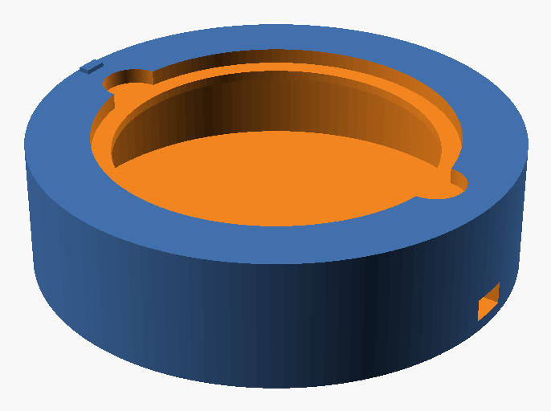
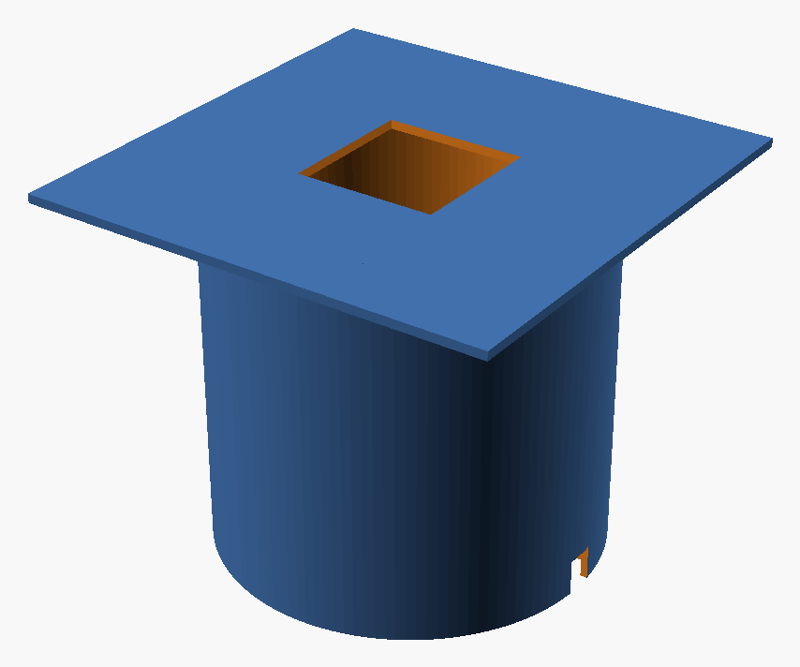

What it is
A two-part stand for 90 mm Petri dishes. It holds the phone flat, about 120 mm above the agar, and lights the plate from the side with an LED strip. Colonies show up bright on a dark background, and every photo gets the same light, distance and angle, which makes counts more accurate and repeatable.


Free to use and modify under the GNU AGPL-3.0, like the app.
คืออะไร
แท่นสองชิ้นสำหรับจานเพาะเชื้อขนาด 90 มม. ใช้วางโทรศัพท์ให้ขนานกับจาน สูงจากผิวอาหารเลี้ยงเชื้อประมาณ 120 มม. และให้แสงจากด้านข้างด้วยแถบไฟ LED โคโลนีจะสว่างบนพื้นหลังมืด และทุกภาพได้แสง ระยะ และมุมเดียวกัน ทำให้ผลนับแม่นยำและทำซ้ำได้
ใช้และดัดแปลงได้ฟรีภายใต้สัญญาอนุญาต GNU AGPL-3.0 เช่นเดียวกับแอป
What you need
| Item | Notes |
|---|---|
| Black matte PLA or PETG, about 250 g | Black matters: it stops light bouncing around inside. |
| 5 V USB COB LED strip, 8–10 mm wide, neutral white (4000–5000 K), 0.4 m | COB strips give even light without hot spots. A USB plug runs from a phone charger or power bank. |
| Optional: inline USB dimmer | Helps tune brightness for very small or very large colonies. |
| Black flocking paper or velvet, a 110 mm disc | Lines the floor so it looks pure black. |
Printer: the shroud's top is 160 × 160 mm, so the bed must be at least about 165 × 165 mm.
สิ่งที่ต้องใช้
| รายการ | หมายเหตุ |
|---|---|
| เส้นพลาสติก PLA หรือ PETG สีดำด้าน ประมาณ 250 กรัม | ต้องเป็นสีดำ เพื่อไม่ให้แสงสะท้อนไปมาภายใน |
| แถบไฟ LED แบบ COB 5 V USB กว้าง 8–10 มม. แสงขาวกลาง (4000–5000 K) ยาว 0.4 ม. | แบบ COB ให้แสงสม่ำเสมอ ไม่เป็นจุด ใช้ไฟจากที่ชาร์จโทรศัพท์หรือพาวเวอร์แบงก์ได้ |
| ไม่บังคับ: ตัวหรี่ไฟ USB | ช่วยปรับความสว่างสำหรับโคโลนีที่เล็กหรือใหญ่มาก |
| กระดาษกำมะหยี่หรือผ้ากำมะหยี่สีดำ วงกลม 110 มม. | ปูพื้นด้านในให้ดำสนิท |
เครื่องพิมพ์: ด้านบนของท่อครอบมีขนาด 160 × 160 มม. ฐานพิมพ์จึงต้องมีขนาดอย่างน้อยประมาณ 165 × 165 มม.
Printing
- Measure your dishes first. The pocket fits dishes with a 90.5 mm outer diameter. If yours differ, open the OpenSCAD file, change
dish_odand export new STLs (see "Adjusting" below). - Settings: 0.2 mm layers, 3 walls, 15 % infill, no supports.
- Print the base upright, as it comes in the file.
- Print the shroud upside down: flat phone platform on the bed, tube pointing up.
การพิมพ์
- วัดขนาดจานก่อน ช่องวางจานรองรับจานที่มีเส้นผ่านศูนย์กลางภายนอก 90.5 มม. ถ้าจานของคุณต่างจากนี้ ให้เปิดไฟล์ OpenSCAD แก้ค่า
dish_odแล้วส่งออก STL ใหม่ (ดู "การปรับแต่ง" ด้านล่าง) - ตั้งค่า: ความหนาชั้น 0.2 มม. ผนัง 3 ชั้น infill 15 % ไม่ต้องใช้ support
- พิมพ์ฐานตั้งขึ้นตามที่อยู่ในไฟล์
- พิมพ์ท่อครอบแบบกลับหัว ให้แผ่นวางโทรศัพท์อยู่บนฐานพิมพ์ และท่อชี้ขึ้น
Assembly
- Stick the black flocking disc onto the floor inside the base.
- Stick the LED strip around the inside wall, just under the ledge the dish rests on. Pass the cable out through the notch.
- Put the shroud on the base, lining up the cable notches.
การประกอบ
- ติดแผ่นกำมะหยี่สีดำที่พื้นด้านในของฐาน
- ติดแถบไฟ LED รอบผนังด้านใน ใต้ขอบที่วางจานพอดี แล้วร้อยสายออกทางร่องบากสายไฟ
- สวมท่อครอบลงบนฐาน ให้ร่องบากสายไฟตรงกัน
Taking a photo
- Remove the lid and put the dish, agar side up, into the pocket. Turn it so the label faces the small tab on the rim, so every plate sits the same way.
- Put the shroud on, lay the phone flat with the main camera over the window, and switch the LEDs on.
- In Colony Counter, tap Count plate. Use the main 1× camera, not macro. Tap Lock focus & exposure once the plate looks sharp.
- If your phone's camera has them, turn off flash, HDR and "scene optimiser".
การถ่ายภาพ
- เปิดฝาจานออก แล้ววางจานโดยให้ด้านอาหารเลี้ยงเชื้ออยู่ด้านบนในช่องวาง หมุนให้ฉลากหันไปทางปุ่มเล็กที่ขอบ ทุกจานจะได้วางในทิศเดียวกัน
- สวมท่อครอบ วางโทรศัพท์ราบโดยให้กล้องหลักอยู่ตรงช่องหน้าต่าง แล้วเปิดไฟ LED
- ในแอป Colony Counter แตะ นับเพลต ใช้กล้องหลัก 1× ไม่ใช่โหมดมาโคร เมื่อภาพคมชัดแล้วแตะ ล็อกโฟกัสและการรับแสง
- ถ้ากล้องโทรศัพท์มีตัวเลือกเหล่านี้ ให้ปิดแฟลช HDR และ "scene optimiser"
Adjusting
Every size is a setting at the top of colony-counter-stand.scad. Open it in the free OpenSCAD, change a value, then press F6 and export each part (set part to "base" or "shroud").
- Dish too small or too large in the photo: change
camera_height. About 110 mm makes it bigger, about 130 mm smaller. Aim for the dish to fill 75–85 % of the frame. - Phone switches to its macro camera: raise
camera_height, or choose the 1× camera. - Colonies at the edge look dim: raise
ledge_id, up to about 84 mm. - Opaque or dark media: side lighting needs light to pass through the agar. For opaque media, photograph without the stand in even daylight instead.
การปรับแต่ง
ทุกขนาดเป็นค่าที่ตั้งได้ที่ด้านบนของไฟล์ colony-counter-stand.scad เปิดด้วยโปรแกรมฟรี OpenSCAD แก้ค่า แล้วกด F6 และส่งออกทีละชิ้น (ตั้ง part เป็น "base" หรือ "shroud")
- จานในภาพเล็กหรือใหญ่เกินไป: แก้
camera_heightประมาณ 110 มม. จะได้ภาพใหญ่ขึ้น ประมาณ 130 มม. จะเล็กลง ให้จานเต็มประมาณ 75–85 % ของภาพ - โทรศัพท์สลับไปใช้กล้องมาโคร: เพิ่ม
camera_heightหรือเลือกกล้อง 1× - โคโลนีที่ขอบจานดูมืด: เพิ่ม
ledge_idได้ถึงประมาณ 84 มม. - อาหารเลี้ยงเชื้อทึบแสงหรือสีเข้ม: การให้แสงด้านข้างต้องให้แสงผ่านวุ้นได้ สำหรับอาหารทึบแสงให้ถ่ายโดยไม่ใช้แท่น ในแสงธรรมชาติที่สม่ำเสมอแทน
Questions or photos of your build:สอบถามหรือส่งภาพแท่นที่พิมพ์: sarapukdee@gmail.com · GitHub · Open the appเปิดแอป